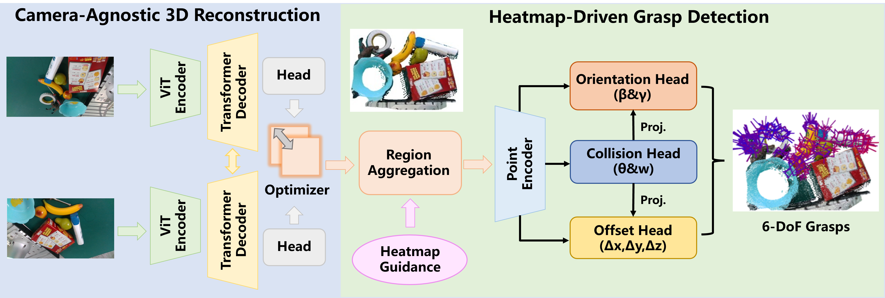

Active-perceptive language-oriented grasp policy for heavily cluttered scenes
APeG brings language understanding, active viewpoint exploration, and reinforcement learning together to grasp specified objects in heavily cluttered scenes.
Read paperTsinghua University
PhD Student
Department of Electronic Engineering
Understanding the world.
Enabling robots to act.
My research spans robotic manipulation, reinforcement learning, VLA, and WAM. I am interested in enabling robots to understand complex scenes with densely stacked objects and heavy occlusion, and to complete long-horizon sequences of manipulation actions.
A closer look
Active perception, visual geometry,
and efficient robotic grasping.
APeG brings language understanding, active viewpoint exploration, and reinforcement learning together to grasp specified objects in heavily cluttered scenes.
Read paper
A multi-view framework that connects sparse RGB observations with visual geometry for six-degree-of-freedom robotic grasping.
Read paper
Hierarchical heatmaps and region feature propagation support efficient, end-to-end grasp detection for deployment on edge devices.
Read paperOriginal figures from the papers and project materials. Click any figure to enlarge.
Research archive
12 publications
* Equal contribution
IEEE Robotics and Automation Letters
2026 IEEE International Symposium on Circuits and Systems (ISCAS), 3623–3627
IEEE Transactions on Instrumentation and Measurement 74, 1–12
2025 IEEE International Symposium on Circuits and Systems (ISCAS), 1–5
arXiv preprint arXiv:2604.20100
IEEE Robotics and Automation Letters 10 (1), 40–47
European Conference on Computer Vision, 305–322
8th Annual Conference on Robot Learning
arXiv preprint arXiv:2603.16270
IEEE Transactions on Circuits and Systems for Video Technology 35 (1), 394–404
IEEE Robotics and Automation Letters
Journal of Cleaner Production 425, 138847
Try a different title, author, venue, or year.
Citation counts reflect the supplied Google Scholar snapshot, November 2026. View current counts
Get in touch
For research conversations and collaboration,
you can reach me by email.